4.6 Organic Chemistry Chirality · Topic 15A
Chiral centres, enantiomers, optical activity and reaction mechanisms
4.6 Organic Chemistry Chirality · Topic 15A
本页严格按 Pearson Edexcel International Advanced Level Chemistry specification 的 Topic 15A: Chirality 编排，主要依据项目内的 4.6 Organic Chemistry Chirality.pdf.pdf。解释采用中文，专业词汇保留 English，便于和 specification 及 exam wording 对照。
Learning objectives
学完本章后，你应该能够：
- explain how chirality produces optical isomerism；
- identify a chiral centre / asymmetric carbon atom；
- draw enantiomers as three-dimensional, non-superimposable mirror images；
- explain optical activity and the rotation of plane-polarised monochromatic light；
- define a racemic mixture and explain why it is optically inactive；
- use optical activity data as evidence for SN1 / SN2 mechanisms and addition to carbonyl compounds。
15.1 Chirality and optical isomerism
Chiral centre
一个 carbon atom 如果 bonded to four different atoms or groups，就是 chiral centre，也常称 asymmetric carbon atom。这样的 tetrahedral centre 没有 plane of symmetry，molecule 具有 handedness，称为 chiral。
如果 carbon 上有两个相同的 substituents，则不是 chiral centre；molecule 可能是 achiral。

Enantiomers
含有 one chiral centre 的 molecule 通常形成 two optical isomers，也叫 enantiomers：
- 它们互为 mirror images；
- mirror image 不能和原 molecule 完全重合，称为 non-superimposable；
- 两个 enantiomers 的 connectivity 相同，但 three-dimensional arrangement 不同；
- 画图时使用 solid wedge 表示 bond 向观察者，hashed wedge 表示 bond 远离观察者。

Number of stereoisomers
若 molecule 有 \(n\) 个 independent chiral centres，理论上最多有：
\[ \text{number of stereoisomers}=2^n \]
例如 two chiral centres 最多有 four stereoisomers，即 two enantiomeric pairs；three chiral centres 最多有 eight。实际数量可能因 meso compounds 或 molecular symmetry 而减少。Topic 15A 的核心 focus 是 single chiral centre 产生的一对 enantiomers。
15.2 Properties of enantiomers
Same in achiral surroundings
在 achiral environment 中，enantiomers 通常有相同的：
- chemical properties；
- melting point、boiling point、density 等 physical properties；
- reaction rate with achiral reagents。
但 chiral biological sensors、enzymes 或 receptors 可以区分两个 enantiomers。因为 biological molecules 本身往往是 chiral，所以两个 mirror images 可能表现出不同的 smell、taste 或 biological activity。

Pharmaceutical significance
药物常以 racemic mixture 形式制备，因为同时合成两个 enantiomers 通常比单独分离一个 enantiomer 简单、便宜。可是，两个 enantiomers 的 pharmacological activity 可能不同：一个可能是 active enantiomer，另一个 activity 较低，甚至产生 unwanted effects。
Ibuprofen 是常见例子：它有一个 chiral centre，商业制剂可含 racemic mixture。考试中要把 chemical equivalence in achiral surroundings 与 different interaction with chiral biological targets 区分开。

15.3 Optical activity
Plane-polarised monochromatic light
普通 light 的 electric field 在多个方向振动。通过 polariser 后，只保留一个方向的振动，形成 plane-polarised light。光源应为 monochromatic light，这样 rotation data 才能在明确的 wavelength 下比较。

Optical activity and direction of rotation
Optical activity 是 single optical isomer 使 plane-polarised light 的 plane 发生 rotation 的性质：
- clockwise rotation：用 \((+)\) 或 historically \(d\) 表示；
- anticlockwise rotation：用 \((-)\) 或 historically \(l\) 表示；
- 两个 enantiomers 造成 equal magnitude、opposite direction 的 rotation。
注意：\((+)/(−)\) 或 \(d/l\) 只描述实验观测到的 rotation direction，不能从它直接推出 R/S configuration。R/S 是另一套 configuration naming system。

Worked example · interpreting optical activity
某 sample 使 plane-polarised light 顺时针旋转，另一个 sample 使光线以相同角度逆时针旋转。
Conclusion： two samples are consistent with a pair of enantiomers，前提是其他 conditions（concentration、path length、temperature 和 wavelength）相同。顺时针的 sample 可记为 \((+)\)，逆时针的 sample 可记为 \((-)\)；不能仅凭这项数据指定 R 或 S。
15.4 Racemic mixtures
Definition and optical inactivity
Racemic mixture（racemate）是 two enantiomers 的 equal amounts mixture，通常写作 50:50 mixture。每个 enantiomer 对 plane-polarised light 的 rotation magnitude 相同，但 direction 相反：
\[ \text{net rotation}=\text{clockwise rotation}+\text{anticlockwise rotation}=0 \]
因此 racemic mixture 是 optically inactive。这并不表示其中没有 chiral molecules，而是两个 enantiomers 的 optical effects 互相 cancel。

Racemate vs enantiopure sample
| Sample | Composition | Net optical rotation |
|---|---|---|
| enantiopure \((+)\) | essentially one enantiomer | clockwise |
| enantiopure \((-)\) | essentially the other enantiomer | anticlockwise |
| racemic mixture | equal amounts of both | zero / optically inactive |
若 mixture 不是 50:50，通常会观察到 partial rotation；rotation direction 反映 excess enantiomer 的 direction。
15.5 Optical activity and reaction mechanisms
SN1 mechanism
Planar carbocation gives racemisation
SN1 是 two-step nucleophilic substitution：
- C–X bond undergoes heterolytic fission，先形成 planar carbocation；
- nucleophile 可以从 carbocation 的 either face attack。
由于 intermediate 是 planar，starting enantiopure substrate 可能得到 two configurations 的 products，形成 racemic mixture（或接近 racemic 的 product mixture）。因此由 optically active reactant 变成 optically inactive / much less active product，可作为 SN1 pathway 的 evidence。

SN2 mechanism
Backside attack gives inversion
SN2 是 one-step concerted mechanism。Nucleophile 从 leaving group 的 opposite side 进行 backside attack，同时 C–Nu bond forming 和 C–X bond breaking：
- transition state 中 carbon 同时与 nucleophile 和 leaving group 相连；
- steric effects 使 backside attack 更有利；
- product 的 configuration 发生 inversion of configuration，常用 “umbrella turning inside out” 理解；
- enantiopure reactant 通常给出 enantiopure product，而不是 racemic mixture。


Optical activity as mechanism evidence
| Observation from an optically active substrate | Mechanistic interpretation |
|---|---|
| Product is racemic or shows major loss of optical purity | planar intermediate is plausible；supports SN1 |
| Product is one inverted enantiomer | backside attack；supports SN2 |
| Product retains configuration | may indicate a different pathway or competing stereochemical steps；需要更多 evidence |
这些 observations 是 evidence，不是单独的 absolute proof。还应结合 substrate structure、solvent、nucleophile、leaving group 和 rate law。
Addition to carbonyl compounds
Attack at a planar carbonyl carbon
Carbonyl carbon 是 approximately planar，\(π\) bond 使 carbonyl group 的两面可以被 nucleophile 接近。如果 nucleophile addition 后形成 a new chiral centre，而原来的 carbonyl compound 和 reagents 没有 chiral bias，nucleophile 从 either face attack 往往产生 a pair of enantiomers，因而得到 racemic mixture。
这与 SN1 的 stereochemical reasoning 相似：关键是 reaction centre 是否提供两个等价的 faces；但 carbonyl addition 的 intermediate、leaving group 和 overall mechanism 需要根据具体 reaction 判断。
Unit 4 Past-paper practice · Topic 15A
以下题目来自 PastPaper/Unit4 的 Pearson Edexcel International Advanced Level Chemistry question papers。题干按原题保留；答案参考对应 mark scheme，按 mark point 列出。共整理 10 组真题练习。
2026 May · Unit 4A · Question 19 · 14 marks
Source: QP-202605-Chemistry-U4A-Level-...pdf，pp. 19–22；对应 MS-202605-Chemistry-U4A-Level-...pdf。
19 This question is about lactic acid, CH\(_3\)CHOHCOOH.
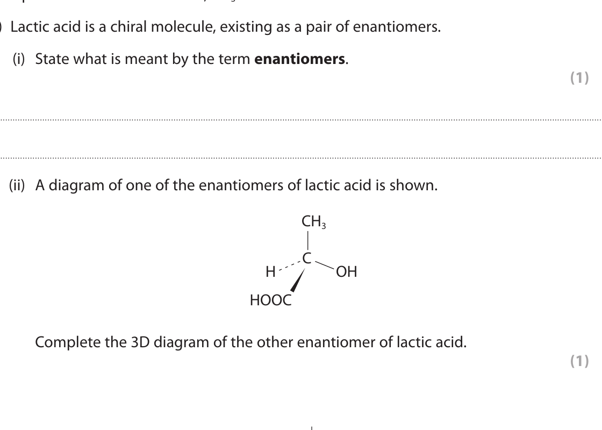
(a)(i) State what is meant by the term enantiomers. (1)
(a)(ii) A diagram of one of the enantiomers of lactic acid is shown. Complete the 3D diagram of the other enantiomer. (1)
(b) Reactions of lactic acid are shown. Give the reagents and conditions for Reaction 1; draw the organic products for Reactions 2 and 3; write the equation for Reaction 3. (6)
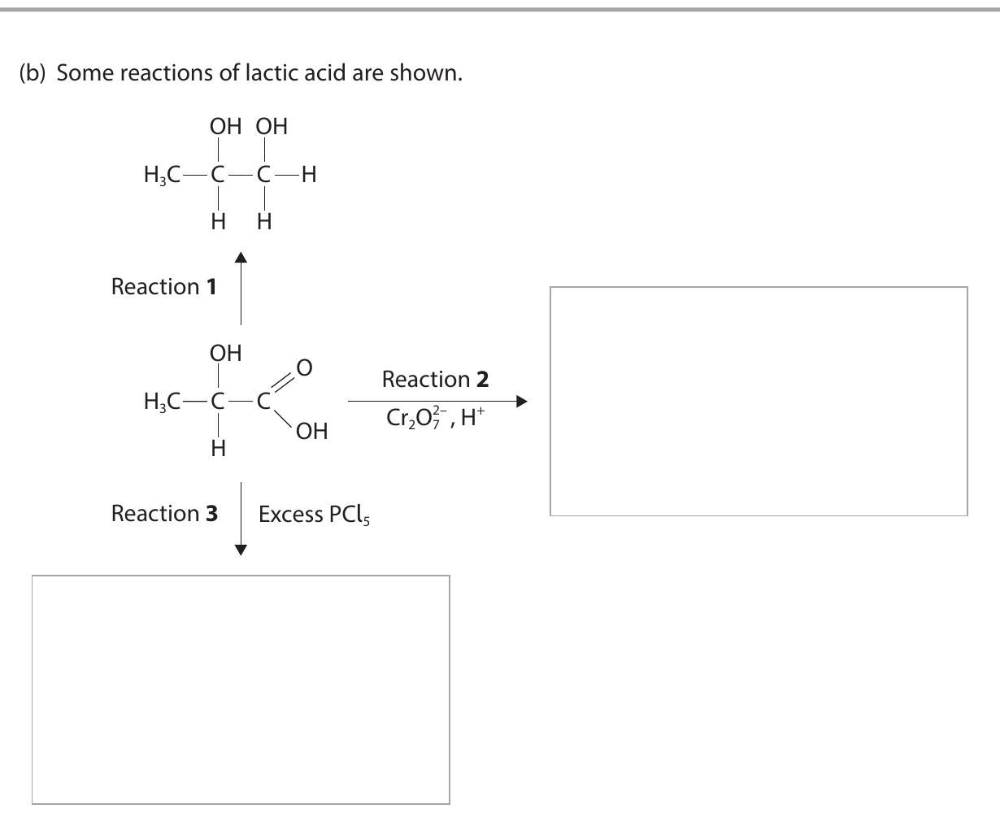
(c) 2000 monomers are polymerised to form poly(lactic acid). Show that the relative molecular mass of this polymer is 144 018. (2)
(d) A cyclic ester X has molar mass 144.0 g mol\(^{-1}\). Complete the equation using molecular formulae and give the structure of X. (4)
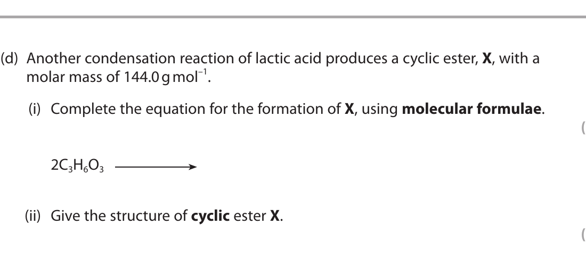
(Total for Question 19 = 14 marks)
Markscheme-based answer · 得分点
- Enantiomers are non-superimposable mirror images; the second diagram has opposite 3D arrangement at the chiral carbon. [2]
- Reaction 1: suitable oxidation/reduction reagent and conditions as specified in the QP; Reaction 2 gives the oxidised carboxylic-acid product; Reaction 3 with excess PCl\(_5\) converts the acid group to the acyl chloride. [6]
- Lactic acid \(M_r=90\); condensation removes \((2000-1)\times18=35\,982\), so \(2000\times90-35\,982=144\,018\). [2]
- \(2\ce{C3H6O3 -> C6H8O4 + 2H2O}\); X is the cyclic diester (lactide) with \(M_r=144.0\). [4]
2023 January · Unit 4A · Question 18 · 6 marks
Source: QP-202301-Chemistry-U4A-Level-...pdf，pp. 16–17；对应 MS-202301-Chemistry-U4A-Level-...pdf。
18 Lactic acid is formed in muscles and in sour milk.
Lactic acid may be obtained from ethanal in the two-step synthesis shown: Step 1 uses HCN/CN\(^-\); Step 2 uses HCl(aq).
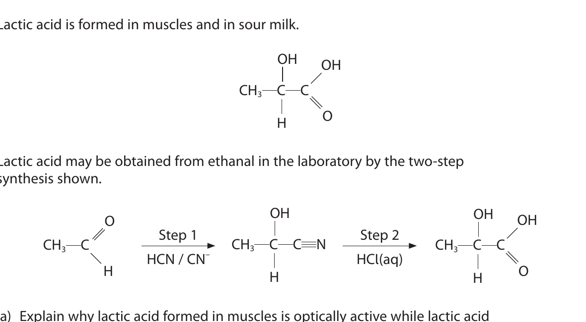
(a) Explain why lactic acid formed in muscles is optically active while lactic acid obtained using the laboratory synthesis is not. You should define any terms you use. (6)
Markscheme-based answer · 得分点
- Lactic acid contains a carbon bonded to four different groups, so it has a chiral centre and exists as enantiomers. [2]
- The biological process is stereoselective / produces one enantiomer, so it is optically active. [2]
- The carbonyl carbon in ethanal is planar; CN\(^-\) can attack from either face. [1]
- The laboratory synthesis produces equal amounts of both enantiomers, a racemic mixture, so opposite rotations cancel and the sample is not optically active. [1]
2022 October · Unit 4A · Question 15 · 19 marks
Source: QP-202210-Chemistry-U4A-Level-...pdf，pp. 10–13；对应 MS-202210-Chemistry-U4A-Level-...pdf。
15 This question is about lactic acid, CH\(_3\)CH(OH)COOH.
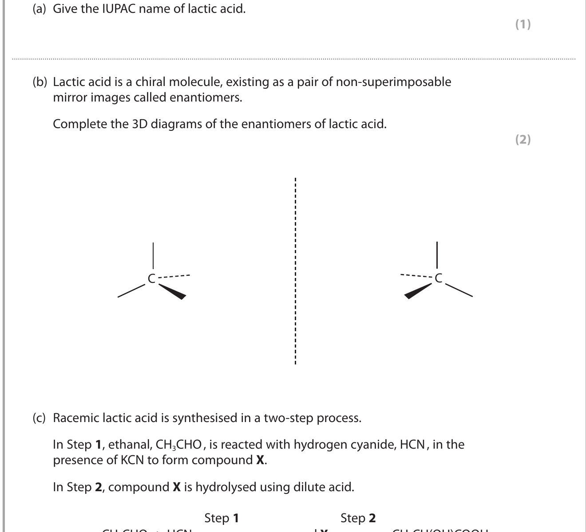
(a) Give the IUPAC name. (1)
(b) Lactic acid is a chiral molecule, existing as a pair of non-superimposable mirror images called enantiomers. Complete the 3D diagrams. (2)
(c) Ethanal reacts with HCN in the presence of KCN to form X; X is hydrolysed using dilute acid.
(c)(i) State what is meant by racemic lactic acid. (1)
(c)(ii) Complete the mechanism for formation of X, including curly arrows, lone pairs and dipoles. (4)
(c)(iii) Write the ionic equation for hydrolysis of X. (2)
(c)(iv) Explain why the lactic acid formed is racemic. (2)
(d)(i) Calculate the mass of lactic acid required to make 1.00 dm\(^3\) of a solution with pH 3.00. Assume \([\ce{HA}]_{initial}=[\ce{HA}]_{equilibrium}\) and \([\ce{H+}]=[\ce{A-}]\). p\(K_a=3.86\), \(M_r=90.0\). (4)
(d)(ii) Explain how this affects the mass in practice. (2)
(d)(iii) Explain why lactic acid is stronger than ethanoic acid. (1)
(Total for Question 15 = 19 marks)
Markscheme-based answer · 得分点
- 2-hydroxypropanoic acid; racemic means equal amounts of two enantiomers. [2]
- Correct CN\(^-\) attack and C=O electron movement; hydrolysis of the nitrile gives the carboxylic acid. [6]
- Carbonyl carbon is planar, so attack occurs equally from either side and gives both enantiomers. [2]
- \(K_a=10^{-3.86}=1.38\times10^{-4}\); \([\ce{H+}]=10^{-3}\); \([\ce{HA}]=[\ce{H+}]^2/K_a=7.24\times10^{-3}\); mass \(=0.652\) g. [4]
- Dissociation is not negligible, so initial concentration must be greater than equilibrium concentration and more acid is required. The OH group is electron-withdrawing and stabilises the conjugate base. [3]
2024 October · Unit 4A · Question 19 · 7 marks
Source: QP-202410-Chemistry-U4A-Level-...pdf，pp. 19–21；对应 MS-202410-Chemistry-U4A-Level-...pdf。
19 This question is about the hydrolysis of halogenoalkanes with hydroxide ions.
Both 2-bromobutane and the product exist as pairs of stereoisomers.
\[\ce{CH3CH2CHBrCH3 + OH- -> CH3CH2CH(OH)CH3 + Br-}\]
| Experiment | [2-bromobutane] / mol dm\(^{-3}\) | [OH\(^-\)] / mol dm\(^{-3}\) | Initial rate / mol dm\(^{-3}\) s\(^{-1}\) |
|---|---|---|---|
| 1 | 0.150 | 0.150 | 0.027 |
| 2 | 0.300 | 0.150 | 0.054 |
| 3 | 0.450 | 0.300 | 0.162 |
(a)(i) State what is meant by stereoisomer. (1)
(a)(ii) Show that the data are consistent with an SN2 mechanism. (3)
(a)(iii) A single stereoisomer is hydrolysed. Explain the stereochemistry of the product. (3)
Markscheme-based answer · 得分点
- Same structural formula but different arrangement in space. [1]
- Doubling [halogenoalkane] doubles rate; doubling [OH\(^-\)] also doubles rate, so rate \(=k[\ce{RX}][\ce{OH-}]\), consistent with SN2. [3]
- SN2 is one-step backside attack; configuration is inverted, so one enantiomer gives predominantly the opposite enantiomer rather than racemisation. [3]
2022 January · Unit 4A · Question 19 · 10 marks
Source: QP-202201-Chemistry-U4A-Level-...pdf，pp. 13–15；对应 MS-202201-Chemistry-U4A-Level-...pdf。
19 Propanal reacts very slowly with HCN at 298 K. To increase the rate, KCN is added.
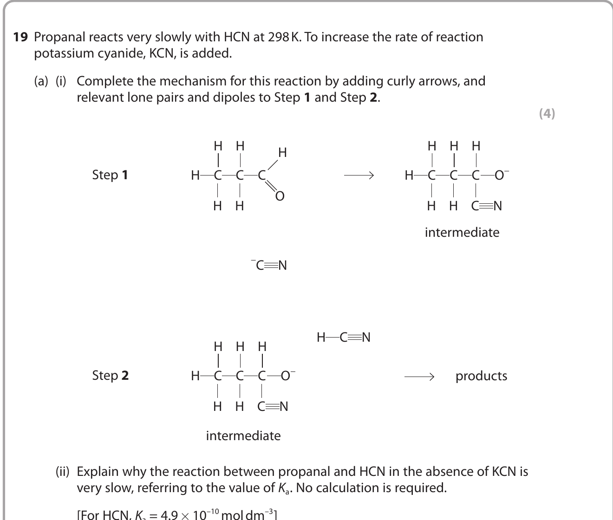
(a) Complete the mechanism for this reaction by adding curly arrows, relevant lone pairs and dipoles to Step 1 and Step 2. Explain why the reaction without KCN is very slow, using \(K_a(\ce{HCN})=4.9\times10^{-10}\). Explain why KCN is a homogeneous catalyst. (8)
(b) The organic products are enantiomers. Draw the three-dimensional structures. (2)
Markscheme-based answer · 得分点
- CN\(^-\) attacks the planar carbonyl carbon; the C=O π electrons move to oxygen; the intermediate is protonated by HCN. [4]
- HCN has a very small \(K_a\), so the concentration of CN\(^-\) is small and the uncatalysed reaction is slow. [2]
- CN\(^-\) is regenerated and appears in a mechanism step but not in the overall equation, so it is a homogeneous catalyst. [2]
- The carbonyl carbon is planar and attack from either face gives equal enantiomers; draw non-superimposable mirror images. [2]
2021 January · Unit 4A · Question 17 · 2 marks
Source: QP-202101-Chemistry-U4A-Level-...pdf，pp. 9–10；对应 MS-202101-Chemistry-U4A-Level-...pdf。
17 Lactic acid, CH\(_3\)CH(OH)COOH, is produced in muscles.
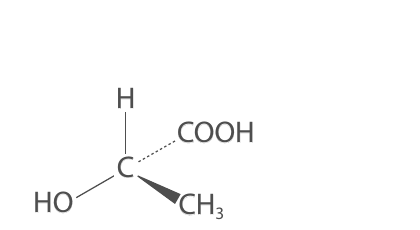
(a)(i) Give a reason why lactic acid shows optical isomerism. (1)
(a)(ii) A laboratory sample does not rotate plane-polarised monochromatic light. Give a reason. (1)
Markscheme-based answer · 得分点
- It contains a carbon atom bonded to four different groups / a chiral centre. [1]
- It is a racemic mixture: equal enantiomer rotations cancel. [1]
2018 May · Unit 4A · Question 13 · 7 marks
Source: QP-201805-Chemistry-U4A-Level-...pdf，pp. 20–21；对应 MS-201805-Chemistry-U4A-Level-...pdf。
13 The halogenoalkane 2-bromopentane was hydrolysed at 20 °C with sodium hydroxide. The rate equation is
\[\text{rate}=k[\ce{CH3CH2CH2CHBrCH3}]\]
(c)(i) Write the mechanism for the hydrolysis of 2-bromopentane. Include curly arrows, dipoles and lone pairs. (3)
(c)(ii) State how the mechanism is consistent with the rate equation. (1)
(c)(iii) A single optical isomer of 2-bromopentane is hydrolysed by this mechanism. Explain whether the product is optically active. (3)
Markscheme-based answer · 得分点
- C–Br bond breaks heterolytically to form a planar carbocation; OH\(^-\) attacks the carbocation. [3]
- The slow / rate-determining step contains only the halogenoalkane, so the rate equation is first order in it. [1]
- The planar carbocation can be attacked from either side, producing both alcohol enantiomers; the product is racemic and not optically active. [3]
2025 January · Unit 4A · Question 16 · 13 marks
Source: QP-202501-Chemistry-U4A-Level-...pdf，pp. 13–14；对应 MS-202501-Chemistry-U4A-Level-...pdf。
16 This question is about pentan-2-one, CH\(_3\)COCH\(_2\)CH\(_2\)CH\(_3\).
(a) Explain why pentan-2-one has a lower boiling temperature than pentan-2-ol. (2)
(b) Give a chemical test which distinguishes between pentan-2-one and pentan-3-one, CH\(_3\)CH\(_2\)COCH\(_2\)CH\(_2\)CH\(_3\). Include the results for both substances. (2)
(c) Give a different chemical test which distinguishes between pentan-2-one and pentanal, CH\(_3\)CH\(_2\)CH\(_2\)CH\(_2\)CHO. Include the results for both substances. (2)
(d) Pentan-2-one, pentan-3-one and pentanal react in a similar way with one test reagent to form solid products. Identify the reagent and describe how these solid products may be used to distinguish the original compounds. (3)
(e) Pentan-2-one and pentan-3-one both react with hydrogen cyanide in the presence of KCN. With pentan-2-one a racemic mixture is formed but with pentan-3-one there is only one product. Explain this difference by referring both to the reaction mechanism and to the structures of the two molecules. (4)
Markscheme-based answer · 得分点
- Both compounds have London forces and permanent dipole–dipole interactions, but pentan-2-ol forms strong intermolecular hydrogen bonds; therefore more energy is needed to vaporise pentan-2-ol. [2]
- Warm each sample with iodine in alkaline solution: pentan-2-one gives a pale yellow iodoform precipitate, while pentan-3-one gives no precipitate. [2]
- Warm with Tollens’ reagent or Fehling’s solution: pentanal gives a silver mirror or brick-red precipitate, while pentan-2-one gives no reaction. [2]
- Use 2,4-DNPH. Each compound gives a solid orange/yellow derivative; filter, wash and recrystallise the derivative, then measure its melting temperature and compare with reference values to identify the original compound. [3]
- CN\(^-\) attacks the planar carbonyl carbon from either face. [1]
- Pentan-2-one forms a carbon bonded to four different groups after addition, so two enantiomers are formed. [2]
- Pentan-3-one has two identical ethyl groups attached to the carbonyl carbon, so the product does not have a chiral centre and only one product forms. [1]
2024 May · Unit 4A · Question 8 · 1 mark
Source: QP-202405-Chemistry-U4A-Level-...pdf，p. 7；对应 MS-202405-Chemistry-U4A-Level-...pdf。
8 How many chiral centres are in the molecule shown?
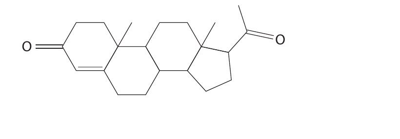
A 4
B 5
C 6
D 7
Markscheme-based answer · 得分点
- Answer: C (6). Count tetrahedral carbon atoms bonded to four different groups; exclude carbonyl carbons, CH\(_2\) carbons and carbons with identical ring paths. [1]
2026 January · Unit 4A · Question 10(a) · 1 mark
Source: QP-202601-Chemistry-U4A-Level-...pdf，p. 7；对应 MS-202601-Chemistry-U4A-Level-...pdf。
10(a) The structure of the sweetener aspartame is shown. How many chiral carbon atoms are there in a molecule of aspartame?
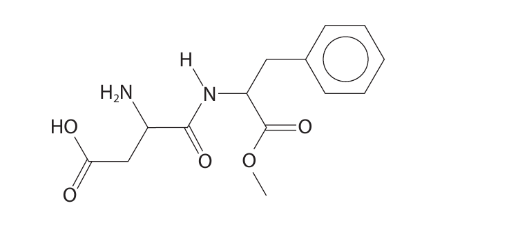
A 1
B 2
C 3
D 4
Show answer · 答案
Answer: B. Count carbon atoms bonded to four different groups; the mark scheme identifies two asymmetric carbon atoms. [1]
Unit 4 multiple-choice bank · Topic 15A
以下 MCQ 的题干、A–D 选项和答案均直接整理自 PastPaper/Unit4；每道题的 answer 和 explanation 独立隐藏。
2025 October Q6(b) 2-Bromooctane is chiral. One isomer is shown. Nucleophilic substitution occurs by both SN1 and SN2 at the same time. Which best describes the organic product?
A a racemic mixture of the two alcohol enantiomers
B enantiomer 2 only
C a mixture containing more of enantiomer 1 than enantiomer 2
D a mixture containing more of enantiomer 2 than enantiomer 1
Show answer · 答案 + explanation
Answer: D. SN1 gives a racemic mixture, while SN2 gives mainly inversion. The inverted enantiomer is therefore present in greater amount.
2024 May Q8 How many chiral centres are in the molecule shown?
A 4
B 5
C 6
D 7
Show answer · 答案 + explanation
Answer: C (6). A chiral centre is a tetrahedral carbon attached to four different groups. Counting the non-equivalent tetrahedral carbon atoms in the displayed structure gives six; carbonyl carbons, CH\(_2\) carbons and carbons with identical ring paths are not chiral centres.
2024 May Q9 The rate equation for the hydrolysis of a halogenoalkane, RX, in aqueous alkali is \(\text{rate}=k[\ce{RX}]\). Which statement is true?
A the mechanism involves a carbocation intermediate
B the reaction has an SN2 mechanism
C the halogenoalkane could be 1-bromobutane
D the main nucleophile in this reaction is H\(_2\)O
Show answer · 答案 + explanation
Answer: A. First-order dependence on RX indicates the slow step is unimolecular, consistent with carbocation formation in SN1.
2024 May Q10 Propanone reacts with HCN in the presence of KCN. Which statement is incorrect?
A CN\(^-\) acts as a nucleophile in the reaction
B a racemic mixture is formed
C the product is not optically active
D the product is 2-hydroxy-2-methylpropanenitrile
Show answer · 答案 + explanation
Answer: B. Propanone has two identical CH\(_3\) groups; the cyanohydrin does not have four different groups at the former carbonyl carbon, so no racemic pair forms.
2021 January Q12 A sample of RBr containing a single optical isomer reacts with hydroxide ions in an SN1 mechanism. The alcohol formed is a racemic mixture. RBr is most likely to be
A primary only
B secondary only
C tertiary only
D primary, secondary or tertiary
Show answer · 答案 + explanation
Answer: C. A tertiary halogenoalkane readily forms a sufficiently stable planar carbocation, allowing attack from either side.
2021 October Q8 When ethanoic acid and chloroethanoic acid are mixed, an equilibrium is set up. The Brønsted-Lowry acids are
A CH\(_3\)COOH and CH\(_2\)ClCOOH
B CH\(_3\)COOH and CH\(_3\)COOH\(_2^+\)
C CH\(_2\)ClCOOH and CH\(_3\)COOH\(_2^+\)
D CH\(_3\)COOH\(_2^+\) and CH\(_2\)ClCOO\(^-\)
Show answer · 答案 + explanation
Answer: A. Both listed carboxylic acids can donate a proton; the conjugate acid and conjugate base are products.
Unit 4 Past-paper practice · Topic 15A · 2021–2026 U4A
以下只收录 2021–2026 U4A 中与 Topic 15A Chirality 直接相关的 structured questions。题目标签统一使用 YYYY Mon · U4A Qn，方便将来用 U4AA 区分同年同月的另一份试卷；不再显示独立的 Source 行。题干和题目要求保持原文；题目中的结构图、3D 图和反应 scheme 使用 extracted_figures/.../adjusted 的独立裁图。每个小问后保留 answer space，答案与得分点默认隐藏。
2021 Jan · U4A Q17 Lactic acid, CH\(_3\)CH(OH)COOH, is produced in muscles as a result of anaerobic respiration.
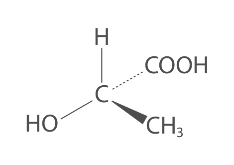
(a)(i) The structure of lactic acid is shown. Give a reason why lactic acid shows optical isomerism. (1)
(a)(ii) A laboratory sample of lactic acid does not rotate the plane of plane-polarised monochromatic light. Give a reason for this observation. (1)
(a)(iii) Give the structure of the organic product formed when lactic acid reacts with concentrated phosphoric(V) acid, H\(_3\)PO\(_4\). (1)
Markscheme-based answer · 得分点
- (a)(i) A carbon atom is bonded to four different atoms/groups / there is a chiral centre. [1]
- (a)(ii) The sample is a racemic mixture containing equal amounts of enantiomers, so opposite optical rotations cancel. [1]
- (a)(iii) Correct structure of the organic product from dehydration with concentrated phosphoric(V) acid. [1]
2022 Jan · U4A Q19 Propanal reacts very slowly with HCN at 298 K. To increase the rate of reaction potassium cyanide, KCN, is added.
(a)(i) Complete the mechanism for this reaction by adding curly arrows, and relevant lone pairs and dipoles to Step 1 and Step 2.
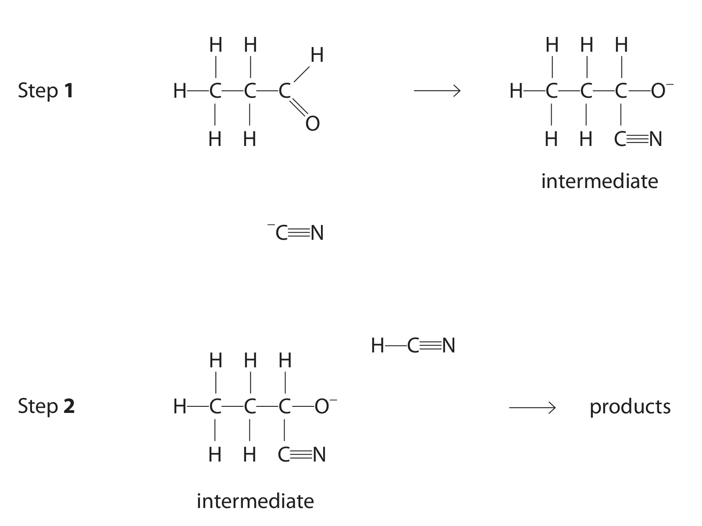
(4)
(a)(ii) Explain why the reaction between propanal and HCN in the absence of KCN is very slow, referring to the value of \(K_a\). No calculation is required. [For HCN, \(K_a = 4.9 \times 10^{-10}\) mol dm\(^{-3}\)] (2)
(a)(iii) KCN is a homogeneous catalyst in this reaction. Justify this description by referring to the mechanism. (2)
(b) The organic products of this reaction are enantiomers. Draw the three-dimensional structures of these enantiomers. (2)
Markscheme-based answer · 得分点
- (a)(i) The carbon lone pair of \(\ce{CN-}\) attacks the \(\delta+\) carbonyl carbon; the \(\ce{C=O}\) \(\pi\) electrons move to oxygen; oxygen is protonated by HCN with the correct curly arrows and lone pairs. [4]
- (a)(ii) HCN has a very small \(K_a\) / is very weakly dissociated, so the concentration of \(\ce{CN-}\) is very low. [2]
- (a)(iii) \(\ce{CN-}\) is in the same phase and is regenerated in the mechanism, so KCN is not used up overall. [2]
- (b) Two non-superimposable 3D mirror images of 2-hydroxybutanenitrile. [2]
2022 Oct · U4A Q15 This question is about lactic acid, CH\(_3\)CH(OH)COOH.
(a) Give the IUPAC name of lactic acid. (1)
(b) Lactic acid is a chiral molecule, existing as a pair of non-superimposable mirror images called enantiomers. Complete the 3D diagrams of the enantiomers of lactic acid.
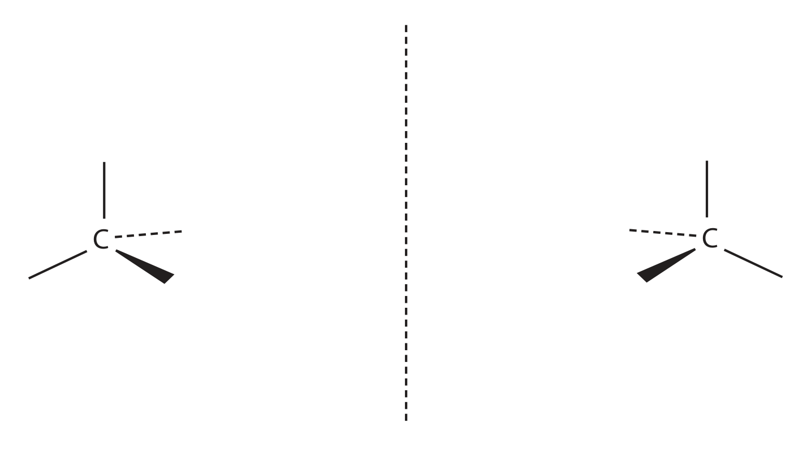
(2)
(c) Racemic lactic acid is synthesised in a two-step process. In Step 1, ethanal, CH\(_3\)CHO, is reacted with hydrogen cyanide, HCN, in the presence of KCN to form compound X. In Step 2, compound X is hydrolysed using dilute acid.
(c)(i) State what is meant by racemic lactic acid. (1)
(c)(ii) Complete the mechanism for the formation of X in Step 1. Include curly arrows, and any relevant lone pairs and dipoles.
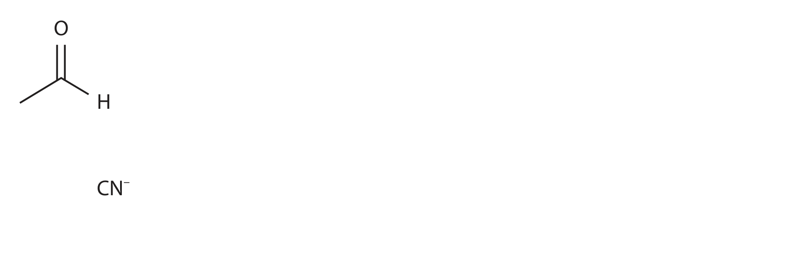
(4)
(c)(iii) Write the ionic equation for the hydrolysis of X in Step 2. State symbols are not required. (2)
(c)(iv) Explain, with reference to your mechanism in (c)(ii), why the lactic acid formed in this process is racemic. (2)
(d)(i) Calculate the mass, in g, of lactic acid, HA, required to make 1.00 dm\(^3\) of an aqueous solution with a pH of 3.00. Assume: \([HA]_{initial} = [HA]_{equilibrium}\); \([H^+] = [A^-]\). [Lactic acid data: p\(K_a\) = 3.86, \(M_r\) = 90.0] (4)
(d)(ii) In practice, the initial concentration of lactic acid does not equal its equilibrium concentration. Explain how this affects the mass of acid needed to make a solution with a pH of 3.00. No calculation is required. (2)
(d)(iii) Explain why lactic acid is a stronger acid than ethanoic acid. (1)
Markscheme-based answer · 得分点
- (a) 2-hydroxypropanoic acid. [1]
- (b) Complete the two non-superimposable 3D enantiomer diagrams. [2]
- (c)(i) An equimolar / 50:50 mixture of the two enantiomers. [1]
- (c)(ii) \(\ce{CN-}\) attacks the \(\delta+\) carbonyl carbon; \(\ce{C=O}\) \(\pi\) electrons move to oxygen; correct intermediate and protonation are shown. [4]
- (c)(iii) \(\ce{CH3CH(OH)CN + 2H2O + H+ -> CH3CH(OH)COOH + NH4+}\). [2]
- (c)(iv) The carbonyl carbon is trigonal planar, so \(\ce{CN-}\) attacks from either side and forms equal enantiomers. [2]
- (d)(i) \([H^+] = 1.00\times10^{-3}\), \(K_a=1.3804\times10^{-4}\), \([HA]=7.2444\times10^{-3}\) mol dm\(^{-3}\), mass \(=0.652\) g. [4]
- (d)(ii) Dissociation is significant, so \([HA]_{initial} > [HA]_{equilibrium}\) and more acid is required. [2]
- (d)(iii) The OH group is electron withdrawing / has a negative inductive effect and stabilises the conjugate base. [1]
2023 Jan · U4A Q18 Lactic acid is formed in muscles and in sour milk.
Lactic acid may be obtained from ethanal in the laboratory by the two-step synthesis shown.
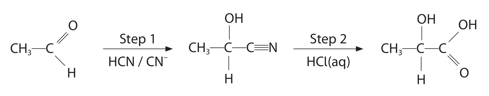
(a) Explain why lactic acid formed in muscles is optically active while lactic acid obtained using the laboratory synthesis is not. You should define any terms you use. (6)
Markscheme-based answer · 得分点
- Lactic acid has a carbon atom bonded to four different groups, so it has a chiral centre and exists as enantiomers. [2]
- The biological route is stereoselective and produces one enantiomer, so it is optically active. [2]
- The carbonyl carbon in ethanal is planar and \(\ce{CN-}\) can attack from either face. [1]
- The laboratory route gives equal amounts of both enantiomers, a racemic mixture, so their rotations cancel. [1]
2024 October · U4A Q19 This question is about the hydrolysis of halogenoalkanes with hydroxide ions.
Both 2-bromobutane and the product exist as pairs of stereoisomers.
\[\ce{CH3CH2CHBrCH3 + OH- -> CH3CH2CH(OH)CH3 + Br-}\]
| Experiment | [2-bromobutane] / mol dm\(^{-3}\) | [OH\(^-\)] / mol dm\(^{-3}\) | Initial rate / mol dm\(^{-3}\) s\(^{-1}\) |
|---|---|---|---|
| 1 | 0.150 | 0.150 | 0.027 |
| 2 | 0.300 | 0.150 | 0.054 |
| 3 | 0.450 | 0.300 | 0.162 |
(a)(i) State what is meant by stereoisomer. (1)
(a)(ii) Show that the data are consistent with an SN2 mechanism for this reaction. (3)
(a)(iii) In one experiment, a single stereoisomer of 2-bromobutane was hydrolysed. Explain the stereochemistry of the product. (3)
Markscheme-based answer · 得分点
- (a)(i) Compounds with the same structural formula but a different arrangement of atoms in space. [1]
- (a)(ii) Doubling [2-bromobutane] doubles rate; doubling [OH\(^-\)] also doubles rate; rate \(=k[\ce{RX}][\ce{OH-}]\), consistent with SN2. [3]
- (a)(iii) SN2 is a one-step backside attack, so configuration is inverted; a single stereoisomer gives predominantly the opposite stereoisomer rather than racemisation. [3]
2025 January · U4A Q16 This question is about pentan-2-one, CH\(_3\)COCH\(_2\)CH\(_2\)CH\(_3\).
(a) Explain why pentan-2-one has a lower boiling temperature than pentan-2-ol. (2)
(b) Give a chemical test which distinguishes between pentan-2-one and pentan-3-one, CH\(_3\)CH\(_2\)COCH\(_2\)CH\(_2\)CH\(_3\). Include the results for both substances. (2)
(c) Give a different chemical test which distinguishes between pentan-2-one and pentanal, CH\(_3\)CH\(_2\)CH\(_2\)CH\(_2\)CHO. Include the results for both substances. (2)
(d) Pentan-2-one, pentan-3-one and pentanal react in a similar way with one test reagent to form solid products. Identify the reagent and describe how these solid products may be used to distinguish the original compounds. (3)
(e) Pentan-2-one and pentan-3-one both react with hydrogen cyanide in the presence of KCN. With pentan-2-one a racemic mixture is formed but with pentan-3-one there is only one product. Explain this difference by referring both to the reaction mechanism and to the structures of the two molecules. (4)
Markscheme-based answer · 得分点
- (a) Pentan-2-ol forms strong intermolecular hydrogen bonds; pentan-2-one cannot donate hydrogen bonds, so pentan-2-one has the lower boiling temperature. [2]
- (b) Iodine in alkaline solution: pentan-2-one gives a pale yellow iodoform precipitate; pentan-3-one gives no precipitate. [2]
- (c) Tollens’ or Fehling’s test: pentanal gives a silver mirror or brick-red precipitate; pentan-2-one gives no reaction. [2]
- (d) 2,4-DNPH gives a solid derivative with each; purify, measure melting temperature and compare with reference values. [3]
- (e) \(\ce{CN-}\) attacks the planar carbonyl carbon from either face. Pentan-2-one gives a carbon bonded to four different groups and therefore two enantiomers; pentan-3-one has two identical ethyl groups and gives one achiral product. [4]
2026 May · U4A Q19 This question is about lactic acid, CH\(_3\)CHOHCOOH.
(a) Lactic acid is a chiral molecule, existing as a pair of enantiomers.
(a)(i) State what is meant by the term enantiomers. (1)
(a)(ii) A diagram of one of the enantiomers of lactic acid is shown. Complete the 3D diagram of the other enantiomer of lactic acid.
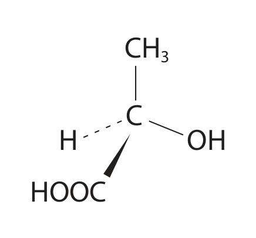
(1)
(b) Some reactions of lactic acid are shown.
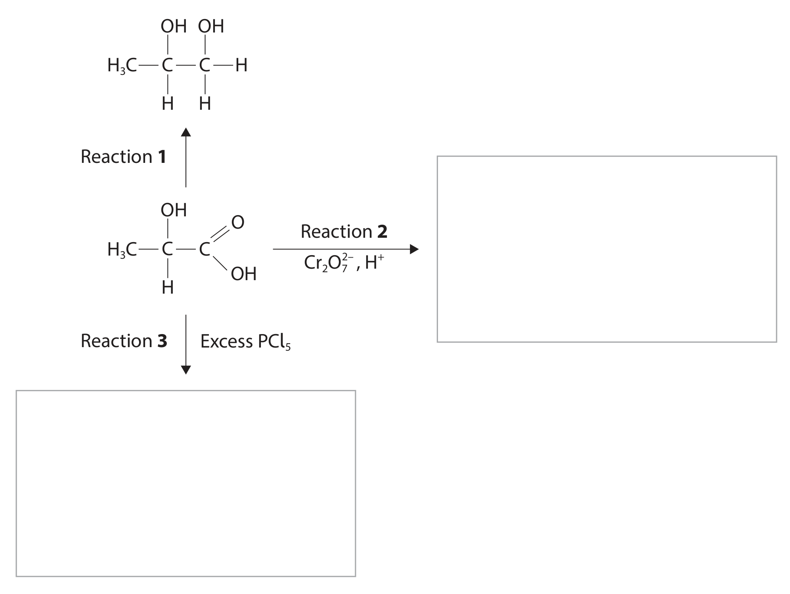
(b)(i) Give the reagents and conditions for Reaction 1. (2)
(b)(ii) Draw the structures of the organic products for Reactions 2 and 3 in the boxes provided. (2)
(b)(iii) Write the equation for Reaction 3. State symbols are not required. (2)
(c) Lactic acid reacts in condensation reactions to form esters. A condensation polymer, poly(lactic acid), may be formed from lactic acid. Two repeat units of poly(lactic acid) are shown. 2000 monomers are polymerised to form poly(lactic acid). Show that the relative molecular mass of this polymer is 144 018. (2)
(d) Another condensation reaction of lactic acid produces a cyclic ester, X, with a molar mass of 144.0 g mol\(^{-1}\).
(d)(i) Complete the equation for the formation of X, using molecular formulae. (2)
(d)(ii) Give the structure of cyclic ester X. (2)
Markscheme-based answer · 得分点
- (a)(i) Non-superimposable mirror images. [1]
- (a)(ii) Complete the mirror-image 3D arrangement at the chiral carbon. [1]
- (b)(i) Suitable reducing reagent and conditions for Reaction 1, as shown by the conversion of lactic acid to propane-1,2-diol. [2]
- (b)(ii) Reaction 2 gives pyruvic acid, \(\ce{CH3COCOOH}\); Reaction 3 gives the corresponding acyl chloride, \(\ce{CH3CH(OH)COCl}\). [2]
- (b)(iii) \(\ce{CH3CH(OH)COOH + PCl5 -> CH3CH(OH)COCl + POCl3 + HCl}\). [2]
- (c) \(2000\times90 - 1999\times18 = 144018\). [2]
- (d)(i) \(\ce{2C3H6O3 -> C6H8O4 + 2H2O}\). [2]
- (d)(ii) Correct cyclic diester / lactide structure. [2]
Unit 4 multiple-choice bank · Topic 15A · 2021–2026 U4A
以下 MCQ 只保留 2021–2026 U4A 中直接考查 chiral centre、enantiomer、racemic mixture、SN1/SN2 stereochemistry 或 optical activity 的题目。题干、选项、答案和 explanation 均独立保留；题图使用 adjusted 独立裁图。
2021 January Q12 A sample of a bromoalkane, RBr, containing a single optical isomer reacts with hydroxide ions in an SN1 mechanism. The alcohol formed is a racemic mixture. From this information, it can be deduced that RBr is most likely to be
A primary only
B secondary only
C tertiary only
D primary, secondary or tertiary
Show answer · 答案 + explanation
Answer: C. A tertiary halogenoalkane most readily forms a stable planar carbocation, which can be attacked from either side to give a racemic alcohol.
2021 May Q8 The compound menthol has the structure shown. Some of the carbon atoms are labelled P, Q, R and S.
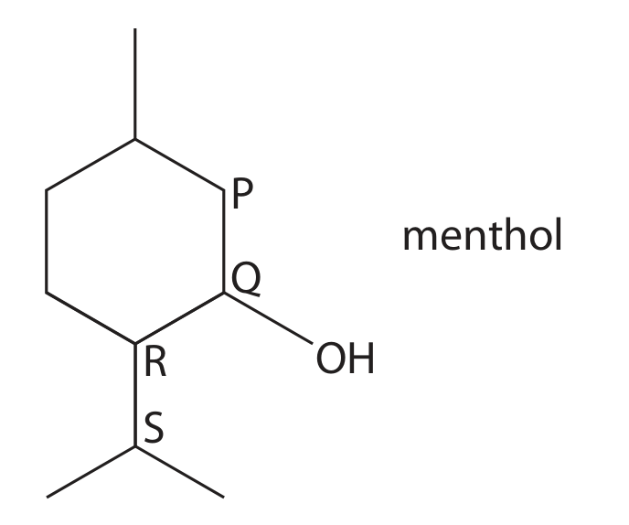
(a) What is the number of chiral centres in a molecule of menthol?
A 1
B 2
C 3
D 4
(b) Which of the carbon atoms is responsible for a peak at 72 ppm in the \(^{13}\)C NMR spectrum of menthol?
A P
B Q
C R
D S
(c) Four groups of students warmed samples of menthol with sodium dichromate(VI) in acid. They purified the reaction mixture and carried out a series of qualitative tests on the organic product. The findings of each group in the class are shown in the table.
| Group | Add 2,4-dinitrophenylhydrazine | Warm with Fehling’s solution | Add PCl\(_5\) |
|---|---|---|---|
| One | ✓ | ✗ | ✓ |
| Two | ✓ | ✗ | ✗ |
| Three | ✓ | ✓ | ✗ |
| Four | ✗ | ✗ | ✓ |
A tick (✓) shows a positive result, a cross (✗) shows a negative result. Which group recorded the results you would expect?
A One
B Two
C Three
D Four
Show answer · 答案 + explanation
Answers: (a) C; (b) B (Q); (c) B (Two). Menthol has three chiral centres; Q is the carbon bonded to OH; its oxidation product is a ketone, positive with 2,4-DNPH but negative with Fehling’s solution and PCl\(_5\).
2022 January Q9 Which of these reactions does not result in the formation of a racemic mixture?
A but-2-ene with HCl
B but-1-ene with HCl
C propanal with HCN
D propanone with HCN
Show answer · 答案 + explanation
Answer: A. Addition of HCl to but-2-ene gives a product without a new asymmetric carbon in this context; the other reactions can produce stereoisomeric products through attack at a planar centre.
2022 January Q10 When a single enantiomer of 2-iodobutane reacts with sodium hydroxide, the product is a mixture of enantiomers. This is because
A the reaction is a nucleophilic substitution
B the reaction proceeds via a negatively charged transition state
C the reaction proceeds via a carbocation intermediate
D the reaction rate depends on the concentration of 2-iodobutane
Show answer · 答案 + explanation
Answer: C. A planar carbocation intermediate can be attacked from either side, causing racemisation.
2024 May Q8 How many chiral centres are in the molecule shown?
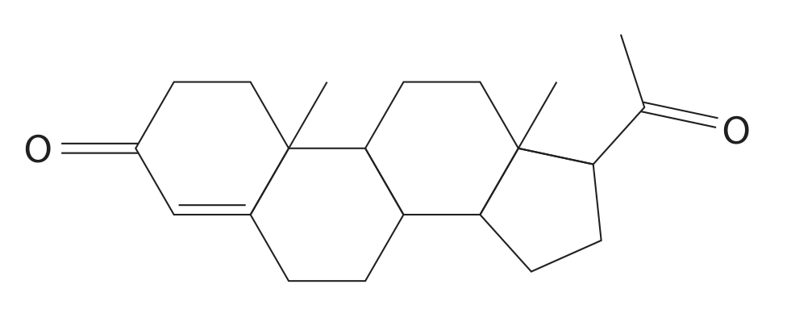
A 4
B 5
C 6
D 7
Show answer · 答案 + explanation
Answer: C (6). Count tetrahedral carbon atoms bonded to four different groups; exclude carbonyl carbons, CH\(_2\) carbons and carbon atoms with identical paths.
2024 May Q10 Propanone reacts with HCN in the presence of KCN. Which of these statements is incorrect?
A CN\(^-\) acts as a nucleophile in the reaction
B a racemic mixture is formed
C the product is not optically active
D the product is 2-hydroxy-2-methylpropanenitrile
Show answer · 答案 + explanation
Answer: C. The product molecule is not chiral because the former carbonyl carbon is bonded to two identical methyl groups; therefore it does not form a racemic pair.
2026 January Q10(a) The structure of the sweetener aspartame is shown. How many chiral carbon atoms are there in a molecule of aspartame?
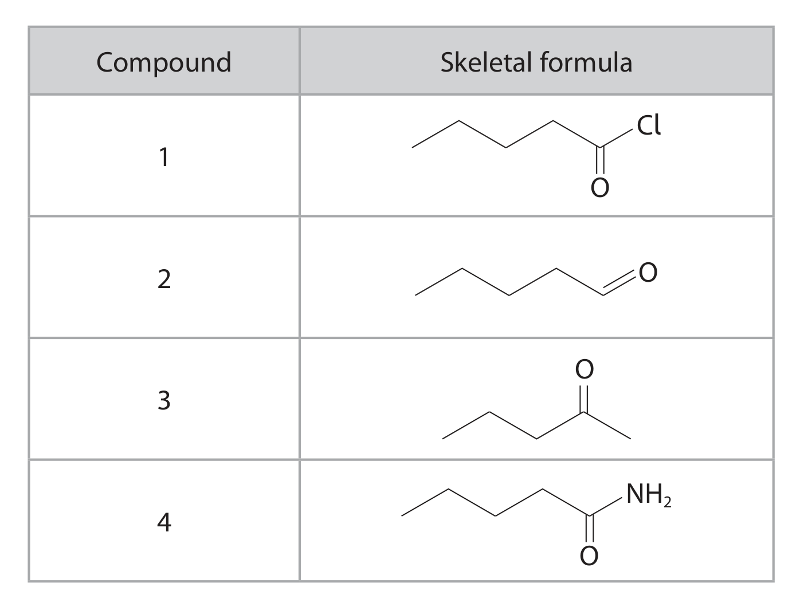
A 1
B 2
C 3
D 4
Show answer · 答案 + explanation
Answer: B. Two carbon atoms are attached to four different groups.
Source note
本页面对应 4.6 Organic Chemistry Chirality.pdf.pdf 与 specification 的 Topic 15A: Chirality。本次真题区限定为 2021–2026 U4A；未来同年同月的 AA 试卷将使用 U4AA 标签区分。
Exam checklist
Source note
本页面对应：Note per Chapter/Note per Chapter/4.6 Organic Chemistry Chirality.pdf.pdf；考纲范围对应 International-A-Level-Chemistry-Spec 的 Topic 15A: Chirality（15.1–15.5）。页面中的 note 示意图和真题图示均独立提取并保存到 assets/notes/chirality/，便于单独放大和复用。